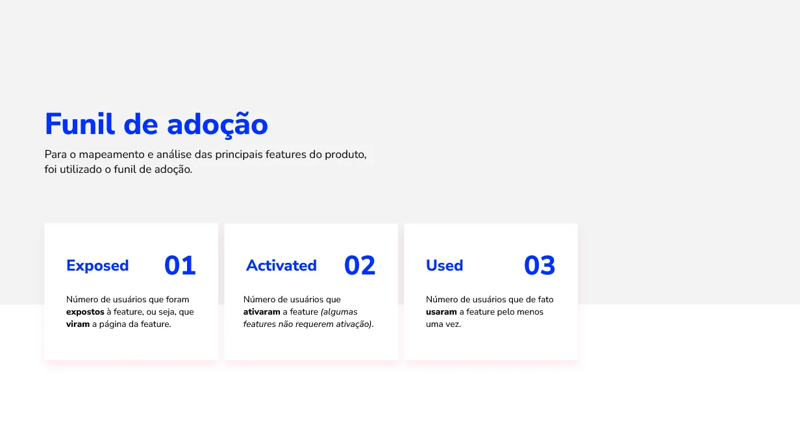
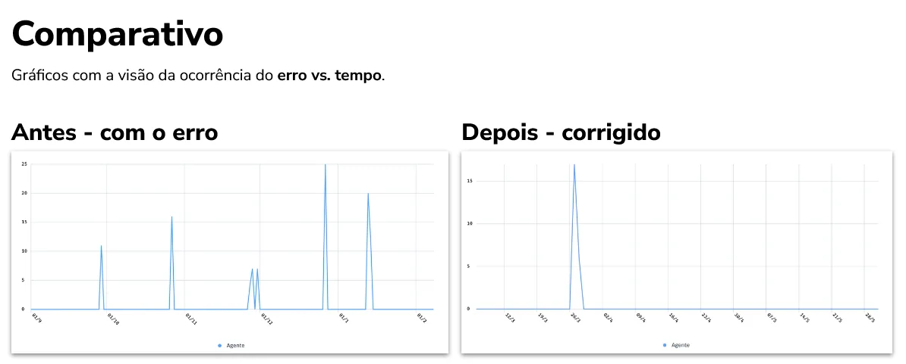
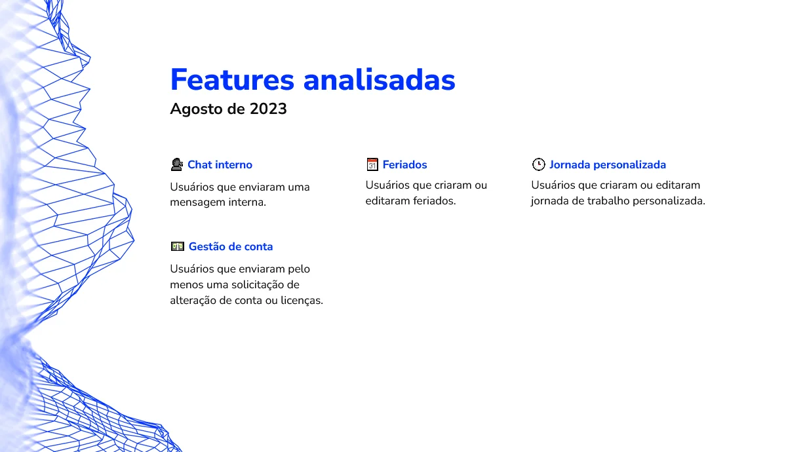
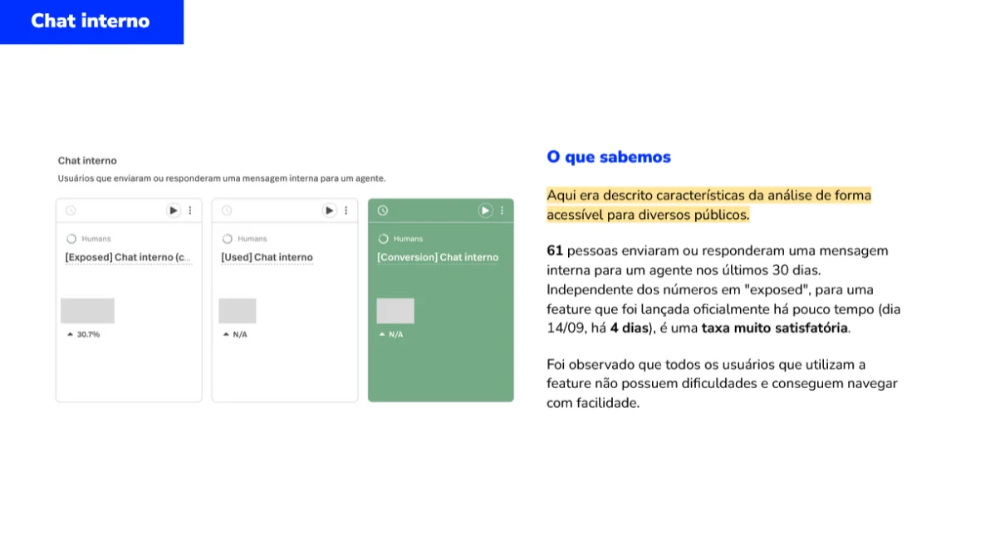
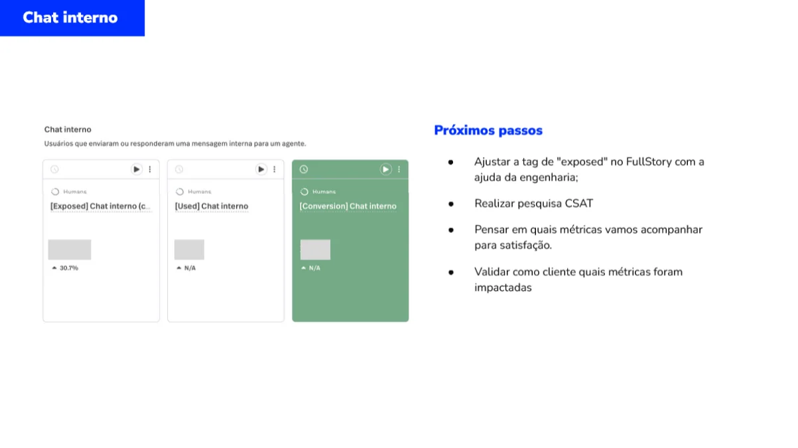

Turning FullStory behavior and adoption data into actionable improvements, from troubleshooting a critical issue to monitoring launches.

The original example reports a resolved product error. Some analytics screenshots contain intentionally fictionalized or redacted data.
I worked with FullStory, a robust Product Analytics platform, to perform detailed analyses of both new and existing features in a continuous flow of improvement and optimization. By applying the Feature Adoption funnel, I was able to gather clear insights into user behavior and platform performance data, which provided a deeper understanding of how functionalities were being adopted, where friction points emerged, and where we could intervene to maximize the value delivered to our customers.
All data and behavioral insights captured through FullStory were reported biweekly to managers and directors, offering a transparent and strategic view of the features' impact on the product. This continuous monitoring enabled quick iterations and adjustments in both design and development - always driven by concrete data and aligned with business goals.

Analysis Examples
Below are two examples of analyses that led to positive results thanks to the continuous monitoring routine I maintained as part of my weekly responsibilities. These are just a couple of highlights, as I applied this process to all features — and listing every case here would result in an overwhelming amount of content.
1. Error in the Agent Platform
While reviewing navigation data and platform performance, I identified an error that abruptly interrupted the user flow in a crucial part of the experience — the customer service chat. Through my analysis, I reported and mapped:
- The exact location where the error occurred;
- What triggered the error;
- User journey and behavior leading up to the issue;
- Patterns and recurrence of the error;
- Number of users affected.
This allowed me to understand and report on the following impacts:
- The error disrupted the user journey abruptly, preventing users from completing their tasks;
- The error message didn’t explain the context, cause, or what had happened;
- The “Reconnect” button often failed to work properly;
- It triggered support tickets;
- It negatively impacted user satisfaction with the platform according to user feedback.
After presenting my analysis to the PM/PO and development team, the error was quickly identified and resolved — closing the support tickets and eliminating major issues affecting the customer experience.


2. New Feature Performance Monitoring
In this example, I’ll briefly share how I regularly reported feature performance to managers and directors. In this case, the analysis focused on the admin platform.






This example demonstrates the importance of tracking feature adoption data to assess whether a new release is successful — especially in scenarios where there’s no room or time to conduct qualitative or quantitative user research after launch.